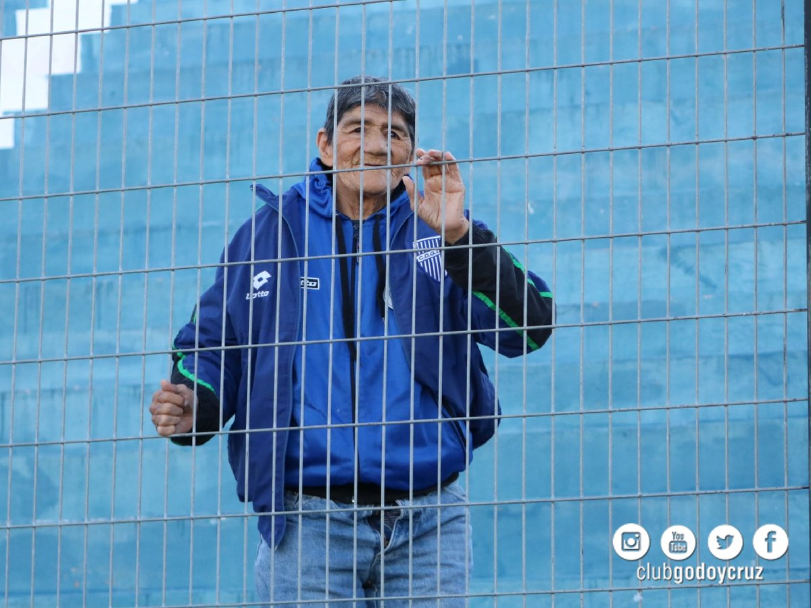

Julio Roque Perez
Hoy, Julio tiene 78 años y cómo él mismo dice está “tranquilo”, hizo lo que quiso y “no se arrepiente de nada”.
Por Ana Laura Vargas Palavecino

UN LOCO
MILLONARIO
Una historia siempre rodeó la figura del Julio, se dice que ganó la lotería y la donó íntegramente al club de sus amores. Él mismo se encargó de confirmarla y relató: “A los 15 años me gané la lotería de San Juan, me fui de Mendoza con la policía que me acompaño a buscar la plata”. Julio no sabe leer ni escribir, por esto, y según él mismo dice, no entiende bien “el tema de la plata” y no puede precisar la cantidad exacta de la suma que ganó, pero lo que sí asegura es que todo el premio que trajo desde San Juan terminó invertido en el club Godoy Cruz, “una tribuna del Feliciano Gambarte y parte de las luces de la cancha, son mías, eso lo hicieron con la plata que yo gané”.
EL DIA QUE EL LOCO
FUE NOTICIA
Hicieron un monumento al hincha, el cual es una estatua del hincha mas importante y conocido que tiene el club. "Godoy Cruz es el alma mio, yo me casé con Godoy Cruz, yo me case con el club"
A los 15 años me gané la lotería de San Juan, me fui de Mendoza con la policía que me acompaño a buscar la plata
Julio Roque Perez
A los 15 años me gané la lotería de San Juan, me fui de Mendoza con la policía que me acompaño a buscar la plata
Julio Roque Perez
A TODOS LADOS
CON EL TOMBA
El loco toda su vida siguió a su querido Expreso por todo el país, “yo eh viajado a todos lados, siempre acompaño a Godoy Cruz por todo el país”. Pero no siempre volvió sano: “En San Juan, hace muchos años, la policía nos bajó de los micros, a mi me partieron la cabeza de un palazo”. Pero esto nunca lo amedrentó a abandonar al Tomba. “No sé, he viajado por todos lados, fui a Corrientes en micro cuando ascendimos en el 94 al Nacional B, también fui a Ben Hur cuando salimos campeones”. “¡Ah!, (se acuerda de repente) también fui a Chile en la Copa Libertadores, los chilenos nos rompieron todos los micros a piedrazos”, se ríe con cierto rencor.